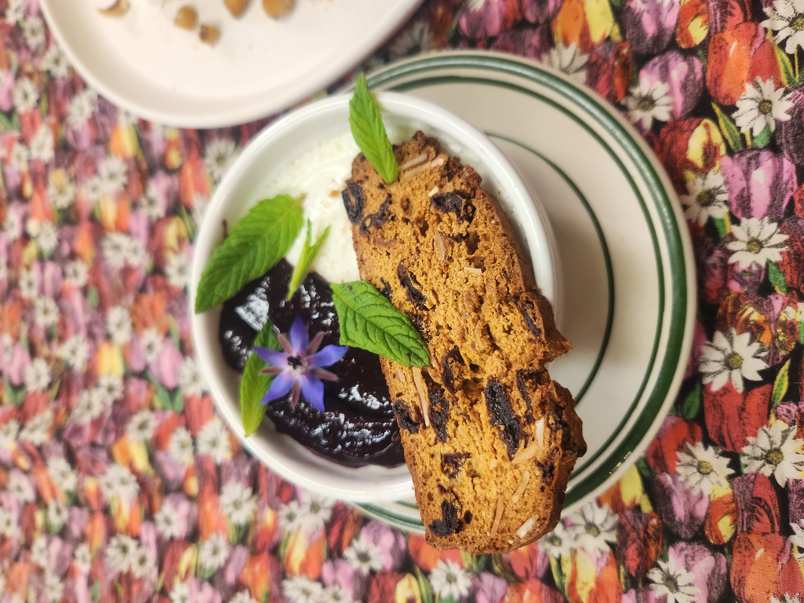

Buttermilk Panna Cotta

This takes the traditional panna cotta a step forward and gives it a nice tangy flavor like a good greek yogurt. It excellently pairs with sweet fruit compotes or purees. I liked to serve it with a nice cookie for some texture.
For this recipe you will need:
- Liquid measuring cup
- Measuring spoons
- Non-reactive pot
- Whisk
- Digital thermometer
- 6 x 8-10oz Ramikens
Ingredients:
| 3.5oz |
Sugar |
| Pinch |
Salt |
| 2 tsp |
Powdered gelatin |
| 2 Cups |
Cream |
| 2 Cups |
Buttermilk |
Instructions:
- In the pot whisk together the sugar, salt, and gelatin
- Whisk in the cream and allow the gelatin to bloom for 5 minutes.
- Heat the cream mixture on medium low until it reaches 150°F - 160°F, whisking occasionally.
- Removed from heat and allow the mixture to cool down to 105°F - 110°F.
- Add the cold buttermilk and divide between the ramikens.
- Place ramikens uncovered in the fridge to set, roughly 6 hours.
Note: For chocolate panna cotta add 3oz of fine chopped dark chocolate to the hot mixture once it is removed from the heat.